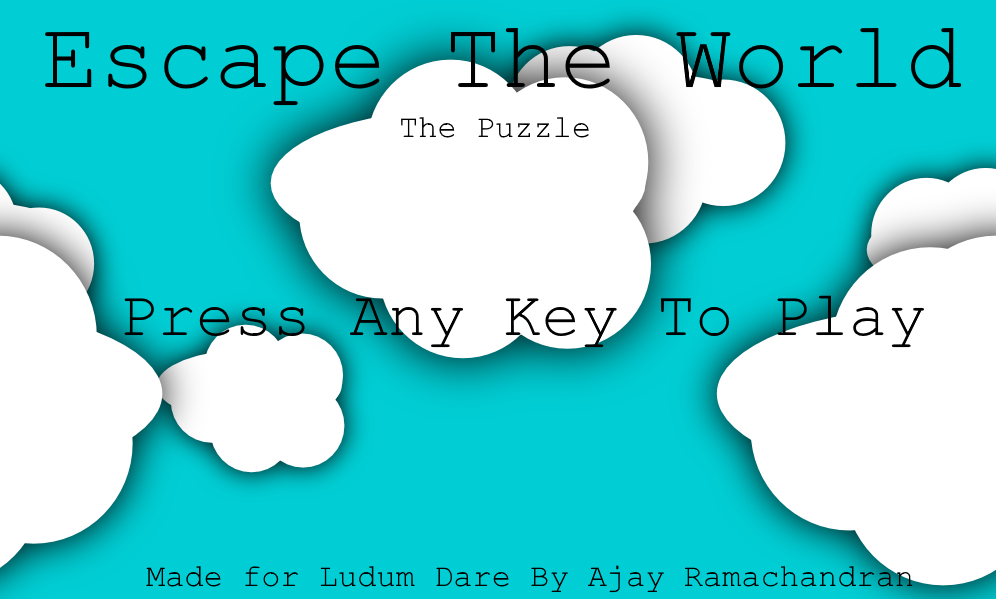
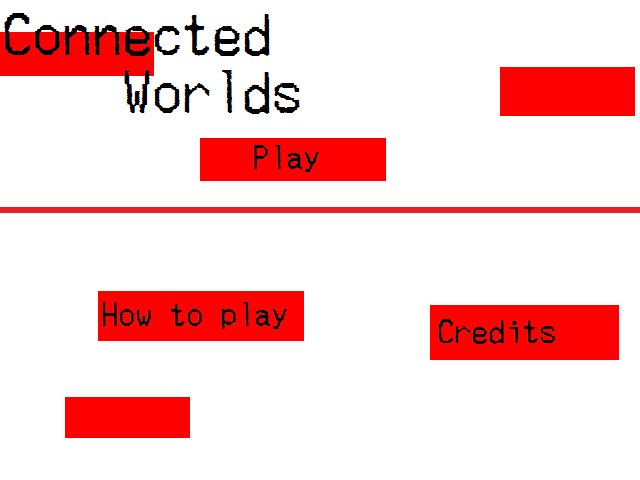

Escape The World

Escape The World is a small level based puzzle game made in 48 hours for Ludum Dare 38. There are multiple colors, you only control one at a time (with WASD), and hit space to switch. You can use blocks to stop you.
Ludum Dare Page:
here
Download:
here
Connected Worlds

Connected Worlds is the first Ludum Dare game I have made, and has since been ported to Android as AntiVerse. In this game, the screen is split in two, and you must make try to reach the end on both screens. You control both characters at the same time, but the worlds are slightly different.
You must use the walls and other obstacles to get both to the end at the same time.
Ludum Dare Page:
here
Download:
here